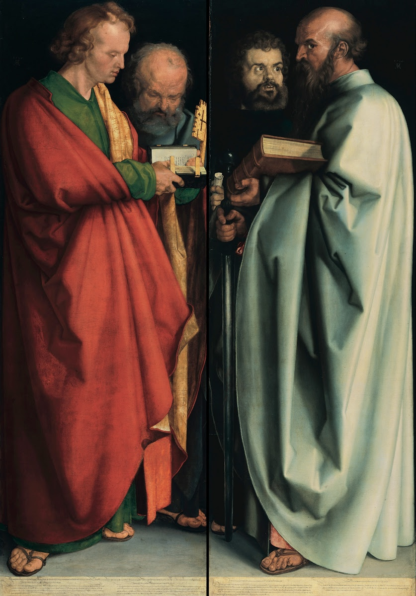
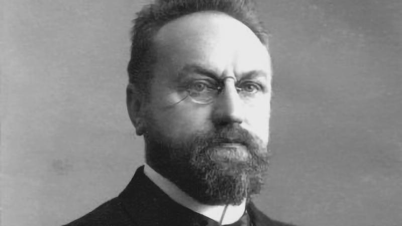

(Prophet Isaiah by Michelangelo from Wikipedia).
Old Testament - Michelangelo's depiction of the prophet Isaiah is found on the Sistine Chapel ceiling, painted between 1508 and 1512. Isaiah was a major prophet in the Hebrew Bible who lived during the 8th century BCE in the Kingdom of Judah. He is the author of the Book of Isaiah, which spans from prophecies of doom and judgment to visions of hope and salvation.
(The Four Apostles by Albrecht Dürer 1526)
New Testament - "The Four Apostles" is a famous painting by the German Renaissance artist Albrecht Dürer, completed in 1526. The artwork consists of two large panels, each featuring two apostles, making up a diptych. The painting was created during a time of significant religious change, influenced by the Protestant Reformation, which Dürer supported. The left panel depicts the apostles John and Peter, while the right panel shows Mark and Paul.
(Herman Bavinck from Modern Reformation).
Theology - Herman Bavinck (1854–1921) was a prominent Dutch Reformed theologian known for his comprehensive and systematic approach to Christian doctrine. Bavinck became a key figure in the neo-Calvinist movement, closely associated with Abraham Kuyper. His magnum opus, the four-volume Reformed Dogmatics, is widely regarded as one of the most significant works of Reformed theology, offering a profound synthesis of biblical scholarship, historical theology, and philosophical insight.